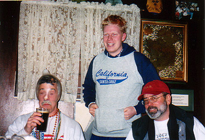

Global Harriettes Hash
Run #879, March 3, 2003
Hare: The Good Doctor and The Bad Doctor
Scribe: Basket
Location: P'tucket
Weather: Upper 20’s, Light Snow
Present: The usual lowlifes
Commemorating: Everywhere, all around the globe, Hashes were being hared by harriettes to
celebrate the 3/3/03 date. One might wonder what that has to do with Harriettes, or Hashing for that matter, so I’m gonna’
hafta’ tell ya’.
Way back when G, Horse, Cecil, and Torch started this whole thing, there were no women. Well, no round eyes anyway. And it pretty much was that way until way past World War I, when that bloody mess stopped a good thing and Hashing took a back seat to trench warfare.
The Hash House Harriers were founded in a moment of post-prandial inspiration, at the Selangor Club Chambers; about 1937/38, by the inmates, who included Cecil Lee, E.J. Galvin, Malay Mail, H.M. Doig (H&C - killed in an air crash just before the Japanese War) and A.S. Gispert of Evatt & Co. Gispert was the real founder - a man of great wit and charm, who was killed only just returned from leave in Australia to rejoin the Volunteers. He was a splendid fellow, and would be happy to know the Harriers are still going strong, and is as merry and bright as ever - or more so.
Gispert was not an athlete, and stress was laid as much on the subsequent refreshment etc. as on the pure and austere running. It was non-competitive, and abounded in slow-packs. Life was then conservative rather than competitive. This is something lost upon some of our new hasher who think running miles along hot tarmac is fun. Consideration should be made to send these blockheads back to Hashing School. Shall I name Flaming Queen for the first trainee?
The name was a mock allusion to the institution that housed and fed us. Later, Torch Bennett returned from leave, and produced order out of chaos - a bank account, balance sheet, and some system. But we prided ourselves on being rather disorganized - or the minimum organization sufficed. The original joint masters were Cecil and "Horse" Thompson, still running somewhere - a past-master at short-cuts and the conservation of energy.
Celebrations were held in various places, and the first was in what is now the Legislative Council, then the Volunteer Mess. The oratory was much the same as now. Lew Davidson is an old member. Morris Edgar was one, but apart from Lew and John Wyatt-Smith I do not think there ware any more ante-diluvians still running. Philip Wickens was also one who kept us going post-war.
Hashing started up again after the War due to Torch Bennett who discovered a Bank Balance and put in a claim for War Damage on one tin bath, and two dozen mugs, and possibly two old bags (not members). We started by a small run in reduced circumstances round the race-course - then the horses were not much better.
The Emergency cramped our style but did not diminish our activities, and we were even called in for information on various by-ways in Selangor, but our period of usefulness to MI 5 was brief, and our information probably otiose. But the hares ran into two bandits at Cheras, who were later copped.
An Irish Accountant, Kennedy, drew up the Rules when we had to register as a Club, and he seems to have preserved the old traditions just as you do now.
Now these were all men clubs, where a beer and a short run was all that was required, but after some time, the more virile would stray from the circle one of the local ladies houses. After some time, the circle was getting kind of sparse. Then it was thought that the light fragrance of perfume would not be so bad, plus the price of a go in town was getting somewhat dear, so it was decided to invite the fairer sex to the Hash.
It wasn’t long before there were more skirts than you could shake a stick at. It was like a smorgasbord, and you didn’t find too many complainers. It was March 3, 1953, when one of the ladies volunteered to Hare. The number three was significant (HHH) and the anniversary of that first haring was celebrated down through the years. This year’s multiple 3’s make for a grand global event, that was followed around the world.
The Good Doctor volunteered for Rhode Island and garnished the help of the Bad Doctor, who when dressed up in a light frock, ain’t that bad on the eyes. The weather cooperated, with temperature in the teens and plenty of snow on the ground, it was a perfect night to hash.
We started at the Selangor School for Wayward Ladies off East Avenue in Pawtucket. Bondo, with Jake and Ben were last to arrive, and joined Basket, WHO, SMP, WIPOS, Oozing, SESYB, and Seamus just as the pack was spiriting around the school. The trail followed streets and led to a break in the fence, along an open sewer line and across the river to Down Town (dead town) Pawtucket. A couple of good checks allowed Bondo to make his way to the front of the pack. Being uncomfortable in this position, he quickly found his place at the rear, and continued his banter about effen snow, effen cold, and effen hare.
Alley ways and parking lots led out to Pawtucket Memorial Hospital, around the Paw Sox ball field, through some tough neighborhoods and back to the river along the power lines. Beer was eventually found overlooking a mound of stinking fish, where Ben just had a rolling good time. Latecumer Fawangii Boner, joined us and we had a long discussion about where this strange odor came from. Stench or not, we had beer and much singing and jubilation ensued.
Beers done, we were back on trail and straightaway to the start, where we circled on an icy slop. Boner was first to find himself on his back, as he raced downhill without caution. The remainder of the pack inched downhill to the celebration. Hares got Down-downed, Bondo got Hashit, Latecumers and Ladies drank as we sang their songs, a voice across the ball field told us in no uncertain terms to SHUT UP!
We adjourned to the East Street Café for much needed food and drink. Condoms were supplied in keeping with the Bimbo Theme, so Basket and Boner displayed their new application, while entertaining the natives. Good Hash and more bimbo’s was agreed by all.
The following pictures are courtesy of Trail Hoover, aka SESYB, aka Bitch^^7
